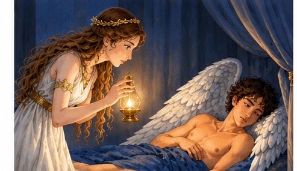
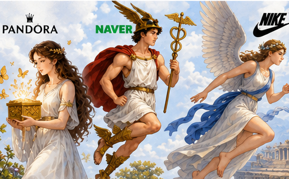
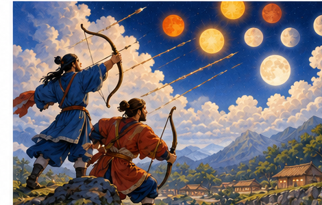
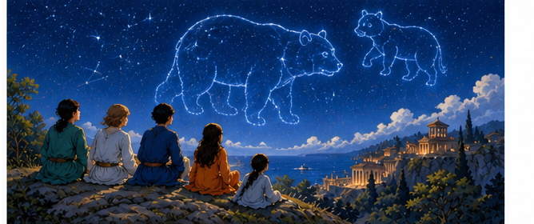

1
왜 테이레시아스는 나르키소스에게 자신을 알지 못할 때 오래 살 것이라고 했나요? 여러분도 그 생각에 동의하나요?
인쇄 페이지 나눔
STEP 01
제시된 단어의 뜻을 확인하고, 이 단어들을 이용해 각각 하나씩 ‘문장’을 만들어 보세요.
| 단어 | 각 단어를 이용해 문장 만들기 |
|---|---|
|
중재하다59쪽 분쟁에 끼어들어 쌍방을 화해시키다. |
|
|
빙자하다85쪽 남의 힘을 빌려서 의지하다. |
|
|
객기141쪽 공연히 부리는 호기. |
|
|
아연실색150쪽 뜻밖의 일에 얼굴빛이 변할 정도로 놀람. |
열심히 읽은 책 내용을 떠올리며 O·X 퀴즈를 풀어 보세요.
페네이오스는 아폴론이 마음에 들지 않아서 다프네를 나무로 변신시켰어요.38쪽
오르페우스는 노래를 부른 덕분에 스튁스강을 건널 수 있었어요.67쪽
뽕나무 열매는 원래부터 검붉은색이었다고 해요.104쪽
칼리스토와 아르카스를 향한 헤라의 저주 때문에 큰곰자리와 작은곰자리는 일 년 내내 밤하늘을 빛내게 되었어요.131쪽
탄탈로스는 신들의 음식인 넥타르와 암브로시아를 몰래 빼돌려 인간에게 주려고 했어요.158쪽
인쇄 페이지 나눔
STEP 02
비판적 독해
고대 그리스와 로마인들에게 가장 유명한 격언으로 “너 자신을 알라”라는 말이 있어요. 철학자 소크라테스와 같이 지혜로운 사람들이 가슴에 새기고 다녔다는데, 왜 현명한 예언자 테이레시아스는 이와 정반대되는 말을 했을까요? p.26
왜 테이레시아스는 나르키소스에게 자신을 알지 못할 때 오래 살 것이라고 했나요? 여러분도 그 생각에 동의하나요?
비판적 · 추론적 독해
천생 사냥꾼인 나르키소스는 들판을 뛰어다니며 사냥하는 것에서 가장 큰 기쁨을 느꼈어요. 그의 멋진 외모와 탁월한 사냥 솜씨는 뭇 소녀들과 청년들, 심지어 요정들까지도 설레게 만들었습니다. 하지만 그는 사랑에 관심이 없었어요. 그에게 매료된 모든 이들의 구애를 매정하게 딱 잘라 거절했지요. 다른 사람들을 받아들일 마음의 자리가 전혀 없었던 거예요. 그에게 다가갔던 수많은 이들은 나르키소스의 태도에 깊은 상처를 입었어요. p.27

나르키소스는 왜 구애자들의 마음을 받아들이지 않았을까요? 마음을 받아 주지 못했을 때 어떤 태도를 취하면 좋았을까요?
상대를 그 자체로 인정하지 못하고 본인만의 기준으로 대하고 평가하는 것을 나르시시즘(Narcissism)이라고 할 수 있는 이유는 무엇일까요?
인쇄 페이지 나눔
적용적 독해
하지만 만약 프쉬케가 용기를 내서 도전하지 않았다면 에로스가 도울 기회조차 없었을 테니, 프쉬케의 결단과 도전하는 용기가 가장 중요했던 것입니다. 프쉬케는 몸소 사랑의 힘, 그리고 상대를 믿고 상대를 만나겠다는 희망의 힘이 얼마나 대단한 것인지 보여 주었습니다. p.89

여러분도 프쉬케와 같이 용기를 내어 어떤 일에 도전한 적이 있었나요? 만약 용기를 내어 도전하지 않았다면 상황이 어떻게 바뀌었을까요? 도전하지 않아서 아쉬운 때를 떠올려도 좋습니다.
적용적 · 추론적 독해
어떤 것이 생겨난 기원의 이유, 연유를 담아낸 이야기라는 뜻에서 연기 설화 또는 연기 신화라고 합니다. 아레투사의 이야기도 대표적인 연기 신화라고 할 수 있습니다. 세상을 신비롭게 바라보던 고대인들의 지혜와 상상력을 감상하면서 주변을 과학과는 다른 시각으로 바라볼 수 있다면 우리의 삶이 더욱 풍부해질 거예요. p.51
달의 모양이 변하는 이유를 상상력으로 접근해 볼까요?
우리는 이미 달의 모양이 왜 변하는지 알고 있습니다. 그럼에도 사람들은 상상을 입혀서 왜 이러한 이야기를 계속 만드는 걸까요?
인쇄 페이지 나눔
분석적 독해
그리스어에서 프쉬케는 ‘영혼’이라는 뜻으로 통하지만 원래는 ‘목숨’이라는 뜻이었어요. 모든 생명체는 호흡을 합니다. 숨을 들이마시고 내쉬지요. 그 들숨과 날숨을 흉내낸 말이 ‘프쉬케’입니다. 사람이 죽는 순간 호흡이 끊어지면서 목숨인 프쉬케가 몸에서 빠져나가면 그것은 공중에서 흩어질까요? 고대 그리스인들은 그렇지 않다고 생각했습니다. 혼백으로 계속 남아 지하 세계로 내려간다고 믿었습니다. 그래서 프쉬케는 혼백, 영혼이라는 뜻이 되었지요. 인간의 심리를 다루는 학문, 심리학을 영어로는 ‘사이콜로지’라고 합니다. 이 단어를 잘 보면 앞에 붙은 말이 ‘Psycho’인데, 그 어원이 바로 ‘Psyche’입니다. p.100
프쉬케는 어떻게 ‘영혼’이라는 뜻을 갖게 되었을까요?
적용적 독해
지금까지 이야기한 브랜드 외에도 여러 브랜드가 그리스 로마 신화 속 주인공과 이야기를 가져와 사용하고 있습니다. 어떤 것들이 있는지 주의 깊게 살펴보세요. 브랜드는 상품에 의미와 가치, 메시지를 입히는 신비로운 힘을 가지고 있습니다. (중략) 여러분 개인의 브랜드는 무엇이라고 생각하나요? p.119
다음의 상표는 어떤 의미로 이름을 붙이거나 로고를 만든 것일까요?

| 상표 | 그리스·로마 신화 | 의미 |
|---|---|---|
|
주얼리 브랜드 판도라 |
판도라 : 제우스가 인간 세계에 내려보낸 최초의 여자로, 모든 선물(pan+dora)을 다 받은 자라는 뜻 | |
|
검색엔진 네이버 |
헤르메스 : 신과 인간의 소통을 담당하고 제우스의 메시지를 전하는 전령의 신 (로고는 헤르메스의 모자 페타소스) | |
|
스포츠 브랜드 나이키 |
페르시아 전쟁에서 승리를 전하기 위해 42.195km를 달린 승리의 여신 ‘니케’의 날개 |
나의 의미와 가치, 메시지를 생각하며 나의 개인 브랜드를 구상해 보세요.
예) 모모 — 모모처럼 친구들의 이야기를 들어준다
인쇄 페이지 나눔
추론적 독해
그들이 선과 정의를 구현하는 윤리적으로 완벽한 존재가 아니라, 제 욕망과 격정에 따라 제멋대로 행동하기 때문에 인간이 사는 이 세상도 부조리하고 불합리하게 돌아가는 거라고 생각했던 겁니다. 우리가 사는 이 세상을 설명하기에는 선하고 완벽한 신보다는 제우스나 헤라 같은 결함이 있는 신이 더 어울릴 것 같았기 때문이 아닐까요? p.133
그리스·로마 신화에서처럼 우리나라 신화에도 세상의 질서가 어지러운 이유를 설명하고 있네요. 사람들이 이러한 신화를 만들어낸 이유는 무엇일까요?
참고 자료
「천지왕본풀이」는 제주도 굿에서 해와 달을 정리하고 이승법과 저승법을 마련한 대별왕·소별왕 형제의 내력을 풀이할 때 구연하는 서사무가이다. 여러 개의 해와 달을 화살로 쏘아 떨어뜨려 하나씩만 남겨 일월을 정리한 이야기, 꽃을 바꿔치기하는 부정한 방법으로 내기에서 이긴 자가 이승을 차지하는 바람에 이승법이 저승과 달리 맑지 못하고 혼탁하게 되었다는 이야기를 통해 인간 세상의 질서가 어떻게 성립된 것인지를 보여 준다.
한국민족문화대백과사전 「천지왕본풀이」

추론적 독해
감히 신들을 시험하려 들다니, 게다가 자기 아들을 죽여 그것을 신들에게 먹이려고 하다니! 신들은 경악했고 분노가 격하게 끓어올랐지만, 먼저 아버지의 사악한 마음 때문에 죽은 펠롭스를 구해야 한다는 생각이 먼저였습니다. p.160
앞서 그리스·로마의 신들은 결함을 가진 완벽하지 않은 존재로 여겼다고 했습니다. 탄탈로스의 오만 앞에서 보인 신들의 모습은 조금 달라 보이네요. 『신화의 숲』을 읽으며 여러분이 느낀 신들은 어떤 모습인가요?
인쇄 페이지 나눔
STEP 03
오늘의 글감
내가 만드는 별자리

수많은 점으로 밤하늘에 뿌려진 별들을 상상력의 연필로 선을 그어서 이어가며 사자, 말, 독수리, 양 그리고 활을 쏘는 사냥꾼, 헤라클레스와 페르세우스, 오리온과 같은 영웅들을 떠올려 보고, 거기에 흥미로운 이야기를 덧붙이면서 부모와 자식, 할머니 할아버지와 손녀 손자들의 대화가 이루어졌을 거예요.
1 여러분에게 있었던 신화 같은 이야기를 떠올려 봅시다. 사소한 이야기여도 되고, 상상이 들어가도 좋습니다.
예) 달리기 경주에서 역전한 이야기, 골을 넣은 이야기, 엄마와 다툰 이야기
2 그 이야기의 주인공들은 어떤 별자리가 될까요? 별자리를 그려 보세요.
3 큰곰자리와 작은곰자리 이야기를 참고하여 여러분만의 신화를 지어 봅시다. 기억될 만한 멋진 신화, 설화를 지어 봅니다.
여기에 도입부만 적고, 완성한 글은 별도의 원고지에 이어서 씁니다.